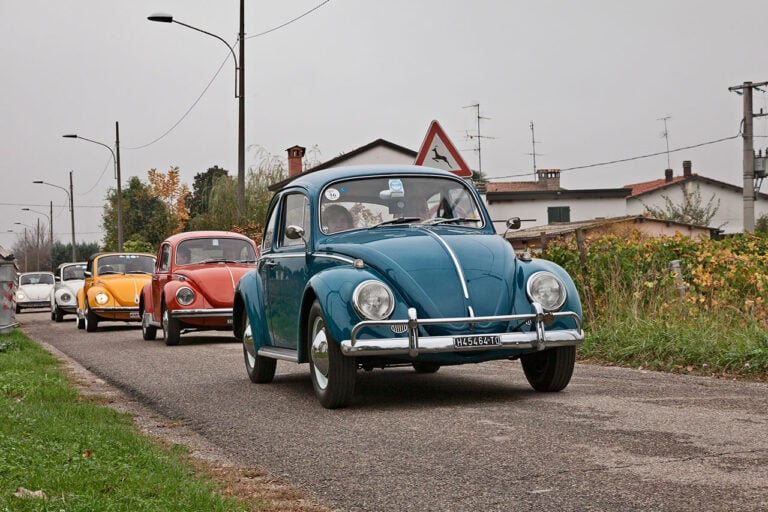

Conheça a história do Fusca, o carro mais famoso da Volkswagen

O Fusca começou a ser vendido no Brasil em 1950. O carro vinha desmontado da Alemanha e não era montado pela Volkswagen, que ainda não havia se instalado no Brasil. A empresa responsável pela montagem era a Brasmotor. O modelo importado para o Brasil tinha o vidro traseiro dividido em dois.
No ano de 1953 o Fusca deixou de ser montado pela Brasmotor e a Volkswagen assumiu a montagem do carro no Brasil, com peças vindas da Alemanha. O modelo produzido já era o que tinha janela traseira única, oval.
Em 1965 foi o lançado o modelo com teto-solar, que ficou conhecido como "Cornowagen". Logo o acessório foi rejeitado e muitos proprietários, incomodados com o apelido mandaram fechar o teto. Mudou também as lanternas e a luz de placa.
Em 1993 a empresa voltou a fabricar o modelo. Foi aprovada, então a Lei do carro popular, que previa isenções e diminuições de impostos para os carros com motor 1.0, e o Fusca e o Chevrolet Chevette L, embora tivessem motores de 1.6l, foram incluídos. O carro vendeu bem, mas longe da meta esperada pela Volkswagen. Em 1996, a empresa deixou de produzir novamente o carro, com uma série especial denominada Série Ouro. A partir daí, ele só seria produzido no México. Nesse período, foram produzidos no Brasil cerca de 42.000 exemplares.